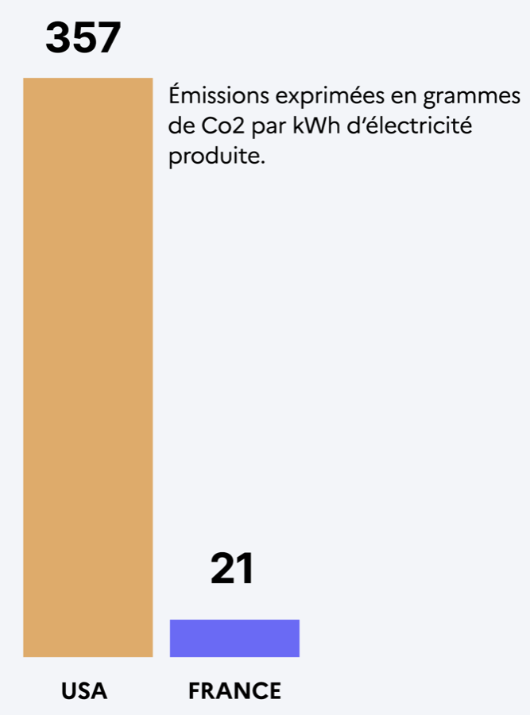

Localisation des serveurs
Impact environnemental : CO₂ et ressources en eau.
Le même kWh ne pèse pas le même carbone
Pour juger l'impact carbone direct d'un centre de données, il faut regarder l'électricité du pays où il est installé — pas celui où vivent les utilisateurs.

Chiffres repris tels quels du support d'origine, qui ne cite pas sa source.
Des serveurs surtout américains
- Les principaux éditeurs de modèles sont des entreprises américaines. Leurs centres de données se concentrent donc sur le territoire américain.
- La France a un mix électrique largement décarboné, porté par le nucléaire. Elle a donc un vrai atout pour accueillir de futures infrastructures d'IA.
- Autrement dit : à modèle égal et à réponse égale, le carbone dépend de la prise de courant.
Santiago du Chili : l'eau, pas le carbone
- À Santiago, les géants américains construisent des centres de données qui consomment des milliards de litres d'eau par an, et aggravent la sécheresse.
- Ils s'installent là pour des infrastructures fiables et une réglementation accueillante, au détriment de l'eau locale.
- On ne juge donc pas une consommation à l'échelle des ressources mondiales, mais face aux contraintes — électricité et eau — de la région qui accueille les machines.
Chiffre repris tel quel du support d'origine, qui ne cite pas sa source.
Ce que l'écran ne mesure pas
L'argument tient, mais compar:IA ne le mesure pas. Le calcul est fait sur le mix électrique mondial moyen, jamais sur celui du pays d'hébergement. Et le bilan affiche de l'énergie, plus aucun CO₂. Un animateur qui pointe l'écran après cette diapositive cherchera un chiffre qui n'y est pas.
Pour mesurer l'effet de la localisation, il faudrait savoir où chaque fournisseur fait tourner ses serveurs. Les fournisseurs ne le publient pas. Le débat reste donc entier — il se mène avec cette diapositive, pas avec l'écran.